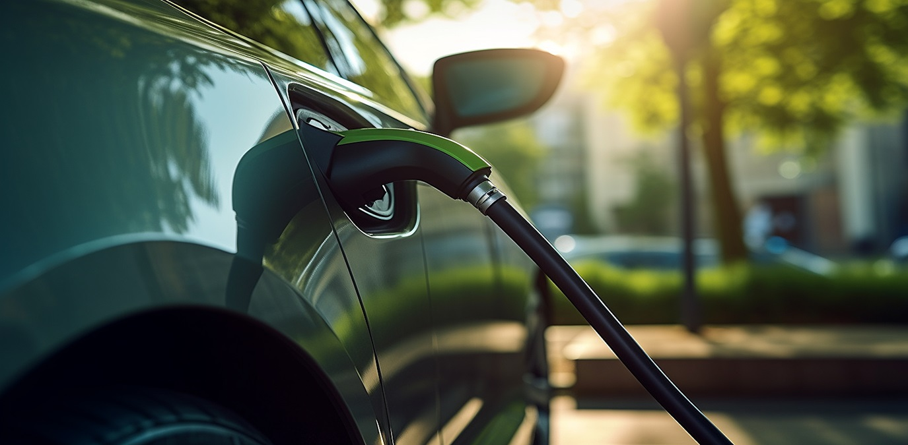

Crescimento da Adoção de Carros Elétricos no Brasil Ganha Impulso em 2024
Número de veículos elétricos nas ruas do país aumentou 30% no último ano, com incentivo do governo e maior interesse por alternativas sustentáveis.
12 de novembro de 2024 - Por Ana Souza
Nos últimos anos, o Brasil tem vivido um crescimento significativo na adoção de carros elétricos. Em 2024, o número de veículos elétricos nas ruas do país aumentou 30%, em comparação com o ano anterior. Esse avanço é impulsionado por uma combinação de fatores, incluindo os incentivos fiscais do governo, o aumento da oferta de modelos e o crescente interesse da população por alternativas mais sustentáveis de transporte.
De acordo com dados da Associação Brasileira do Veículo Elétrico (ABVE), o total de carros elétricos e híbridos no Brasil ultrapassou 250.000 unidades no final de 2024. As montadoras estão investindo cada vez mais no desenvolvimento de modelos acessíveis, e as autoridades federais e estaduais têm implementado políticas de incentivo, como isenção de impostos e benefícios para a instalação de infraestrutura de recarga.
Além disso, a crescente conscientização sobre as questões ambientais tem levado os consumidores a repensar suas escolhas no momento da compra de um veículo. "A mudança para um carro elétrico não é apenas uma opção econômica, mas também uma contribuição importante para a redução da emissão de poluentes", afirmou Lucas Oliveira, especialista em mobilidade urbana.
A expansão da rede de postos de recarga também tem sido um fator crucial para esse crescimento. Hoje, mais de 2.000 pontos de carregamento estão espalhados por diversas cidades brasileiras, e esse número deve continuar a crescer nos próximos anos.
Especialistas acreditam que a tendência de adoção de carros elétricos no Brasil continuará a acelerar, especialmente com a previsão de novos incentivos do governo e o lançamento de modelos ainda mais acessíveis. No entanto, o desafio continua sendo o preço inicial dos veículos, que ainda está acima do de carros a combustão, o que limita o acesso a uma parte significativa da população.
Apesar disso, o futuro da mobilidade elétrica no Brasil parece promissor, e o país pode estar a caminho de se tornar um dos líderes em sustentabilidade no setor automobilístico da América Latina.